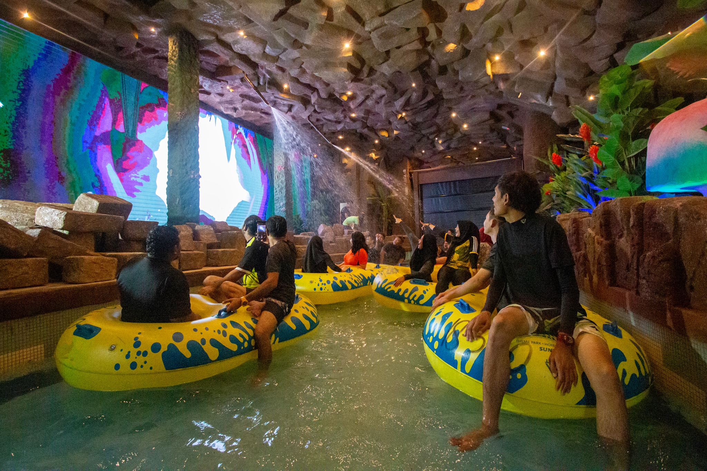
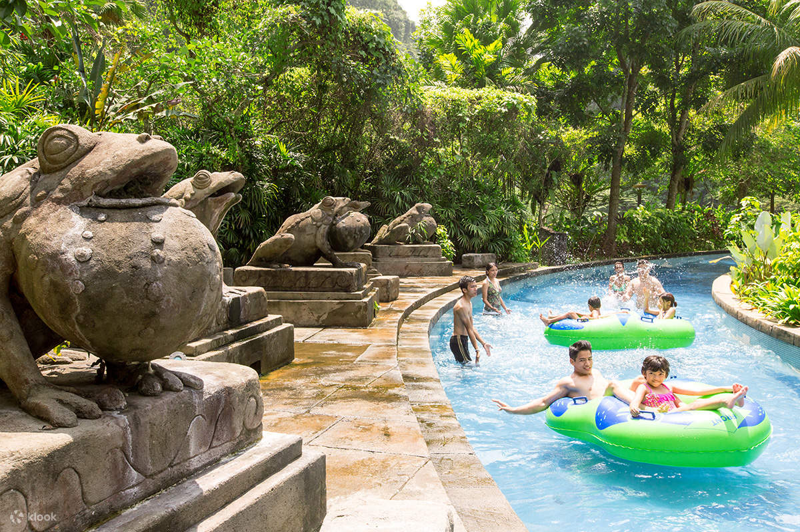
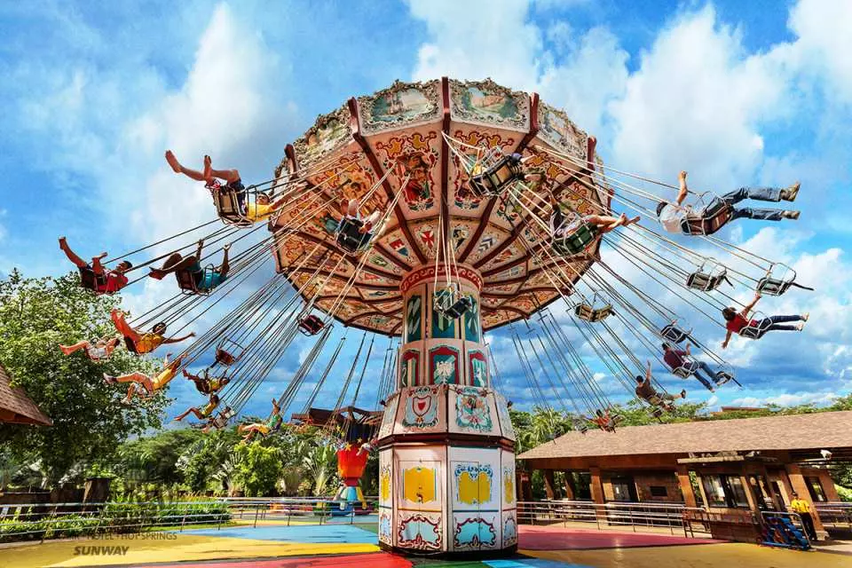

Lost World of Tambun
RM 76 - 127
Sunway Lost World Of Tambun is Malaysia’s premiere action and adventure family holiday destination. A wholesome family experience awaits you behind our majestic walls with everything you could possibly want from amusement park rides to eco-adventure thrills! That’s not all, we’re also located in one of Malaysia’s most historic city, rich with culture and heritage. More than just a themepark, we’re a destination


